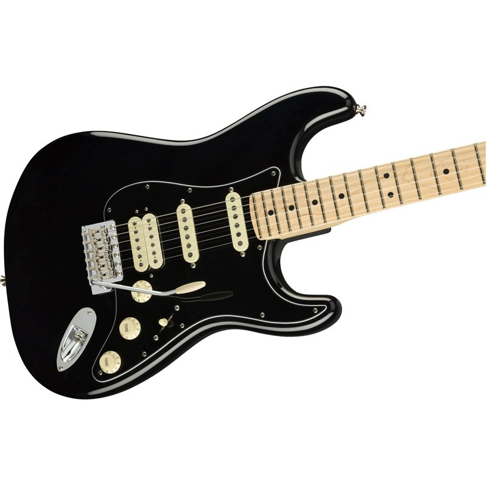
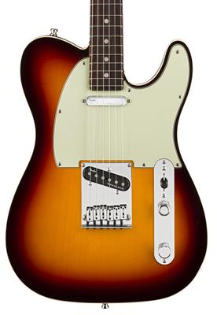
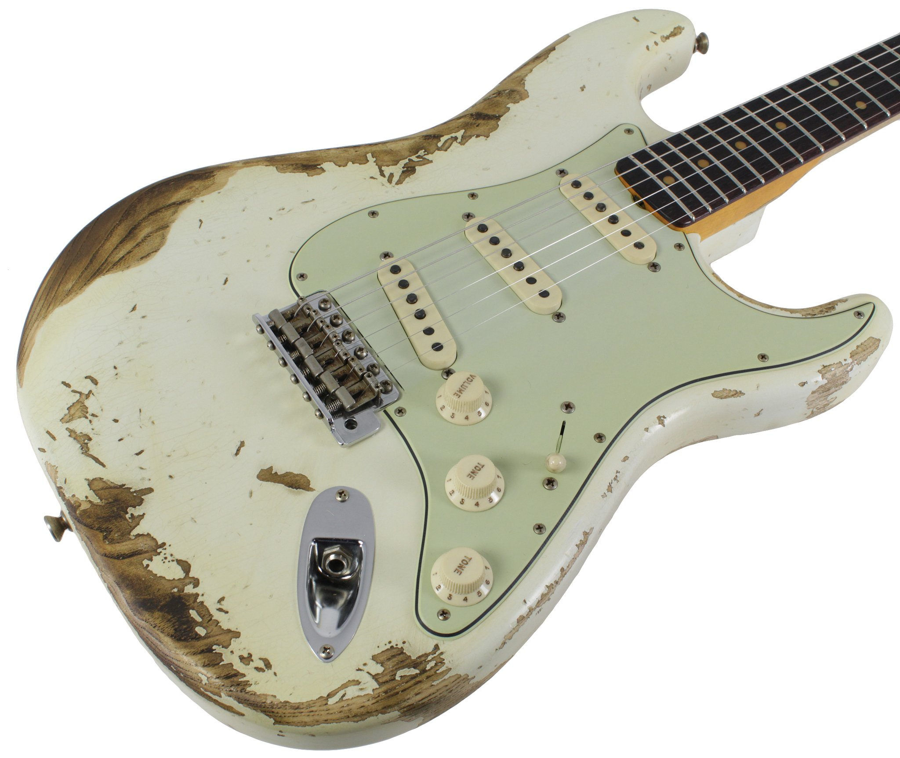

GUITARRAS |
BAJOS |
GUITARRAS |
STRATOCASTEREs un modelo de guitarra eléctrica diseñado por Leo Fender, Bill Carson, George Fullerton, y Freddie Tavares en 1954. Que se sigue fabricando en la actualidad. Junto a las Gibson Les Paul y Fender Telecaster, es uno de los modelos de guitarra más imitados del mundo. Debido a que "Stratocaster" y "Strat" son marca registrada perteneciente a Fender. Las guitarras fabricadas por otros manufacturadores que han copiado el modelo Stratocaster son usualmente llamadas S-Type o ST-type. Estas guitarras son excelentes para un guitarrista de nivel intermedio y avancado ya que para adquirir una guitarra de estas representa invertir Una cantidad de dinero considerablemente alta, por lo que si eres principiante y recientemente descubriste que te llama la atención el aprender este instrumento te recomiendo adquirir otra guitarra de manor precio pero con buena calidad. |
TELECASTEREs una guitarra eléctrica de cuerpo macizo mundialmente conocida, llamada "la tabla" en sus comienzos. Se caracteriza por la simplicidad en su diseño y por el sonido que se obtiene de sus dos pastillas de bobinado simple o single coil, que aparecen en la inmensa mayoría de sus modelos en lugar de las de bobinado doble o humbuckers que aparecieron posteriormente en otras guitarras. Estas guitarras en lo que respecta al tono, el hecho de que tengan dos pastillas single, te da un tono mucho más agudo así que si tu especialidad es la música country te sugiero adquirir una de estas. Ahora, no te dejes engañar por el espectacular tono en clean que proporcionan sus pastillas estas guitarras son excelentes si quieres aumentar la distorción |
|  |
 |
|  | CUSTOM SHOPLas Guitarras Fender Custom Shop han sido diseñadas para y de la mano de los mejores guitarristas del mundo, como lo son Eric Clapton, Beck, Burton, Cray, Gilmour, Townshend y Vaughan, por nombrar sólo a algunos, y ahora tu puedes tener una en tus manos. Estas guitarras son sin duda alguna una obra de arte, sin embargo, solo es conveniente comprar una de estas guitarras si ya cuentas con una carrera artística proyectada o si tienes un capital muy alto, ya que estas guitarras por el hecho de ser hechas por los mejores ingenieros y carpinteros y de que son hechas a la medida y con tu marca personal, son extremadamente caras, una guitarra custom shop puede llegar a costar mas de $100,000. |